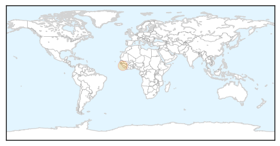

Ebola
30-Day Web Trend
0 alerts, 1 warnings

30-Day Twitter Trend
0 alerts, 0 warnings
Article Locations

Article Confidences

Top Articles:
- 0.999
- Liberia's Ebola victory – Testimony of power of African solidarity in solving problems
- 0.998
- Funerals spark Ebola spike in Guinea
- 0.997
- Can Ebola Stay Hidden in the Orbits of the Eye?
- 0.996
- OraSure Technologies : in race to make much-needed rapid Ebola test
- 0.992
- One Year Later, Ebola’s Lessons for the Next Big Outbreak
- 0.988
- Park honors Ebola relief team
- 0.959
- Chinese Medical Team Returns after Completing Anti-Ebola Task
- 0.946
- The pain of the new normal: Guinea after Ebola
- 0.936
- Technology experts coming up with new ways to attack deadly Ebola virus
- 0.891
- 'Ebola mission hard, but rewarding'
- 0.888
- Nun at Catholic Hospital Dies of Ebola
- 0.820
- Former Topekan working as 'disease detective'
- 0.669
- The World On Arirang
Top Tweets:
- 0.822
- Watch: Liberia celebrates being declared free of the Ebola Virus Disease. EbolaResponse https://t.co/QaZTjpJVCW
- 0.686
- Ebola Doctor To Grads: Enter The Suffering Of Others - NPR http://t.co/Glzs70UFIX ebola EVD
Measles
30-Day Web Trend
1 alerts, 0 warnings

30-Day Twitter Trend
0 alerts, 0 warnings

Article Locations
Article Confidences

Top Articles:
Top Tweets:
-
No tweets found for May 17, 2015